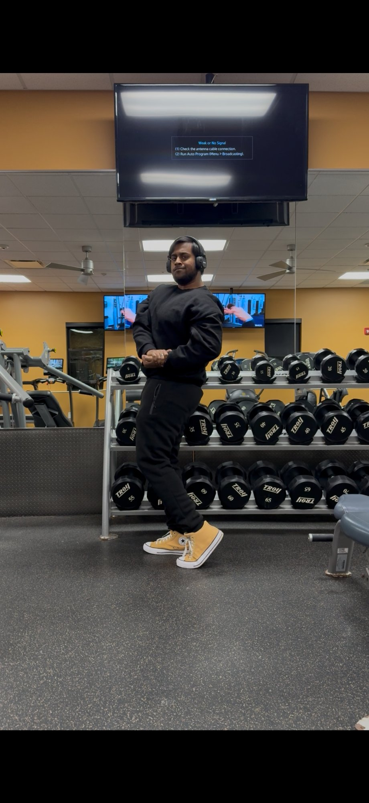

The story behind
the systems.
I didn't start here. My dream was aeronautics — designing systems that fly. But life forced a change in direction, and I landed in computer science. Then a health crisis with my father showed me how broken and slow medical decision-making can be. That was the moment AI stopped being a career choice and became personal. I wanted to build systems that genuinely serve people — not just score well on clean test sets.
Today I build production-grade ML systems — deployed, containerized, monitored pipelines that work in the real world. I'm pursuing my MS in Artificial Intelligence at RIT with a 4.0 GPA, and every project I take on is built with one question: does this actually solve a problem?
Before RIT, I mentored 10+ peers in my university's AI & Technology Club — leading coding sessions on NumPy operations, gradient computation, debugging vanishing gradient issues in LSTM capstone projects, and running live demos of transfer learning with pretrained ResNet and BERT models. Teaching sharpened how I think about problems: anchoring in shared understanding, building intuition before formalism.
The setbacks taught me something simple — you either stop, or you push through. I chose the latter.

Fitness
The gym is my reset. Discipline in training carries over to everything else.
Research Rabbit Holes
From liquid neural networks to orbit determination — if it's a hard unsolved problem, I'm interested.
Aeronautics (Still)
The dream shifted, but the fascination didn't. I still follow space missions and orbital mechanics.